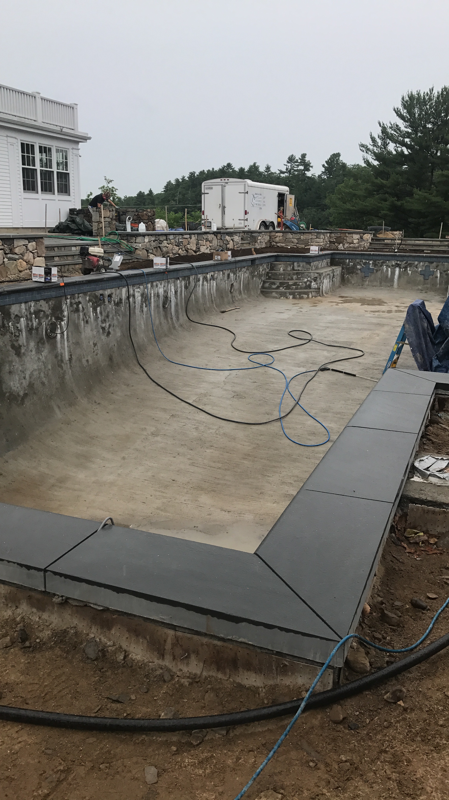
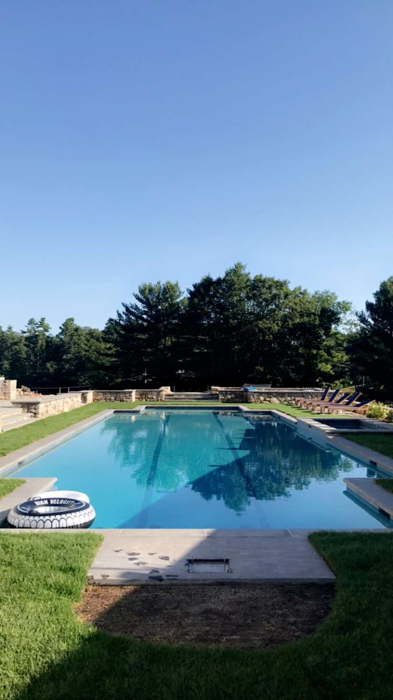

This summer I worked as a laborer for a landscaping company, below are some pictures of a project I helped work on.
Before

This picture above was taken when I first started on the project. The client wanted a new in-ground pool with grass and plants surrounding it. There was a lot of work to be done at this stage.
After

This picture was taken about a month and a half after the original. As you can tell it still is not finished, this is because I had to leave the project to start school.